The GCGEA Membership, Loan and Benefits Management System (GCGEA MLBMS) is the association's web-based system for managing member records, contributions, loans, benefit claims, and the association's finances. It replaces manual, paper-based record keeping with a single system that:
Keeps one accurate record per member — personal details, contributions, loans, and benefits in one place.
Routes applications (loans, benefits, member registrations, budgets, disbursements) through the correct approval steps automatically.
Produces official receipts, statements, checks, and reports.
Keeps a complete audit trail of who did what and when.
Who this manual is for
This manual is written for end users — Membership Officers, Loan Officers, Treasury/Bookkeeping staff, Approving Officers, and Administrators who use the system day to day. Screens and menu items you see depend on the permissions assigned to your user account by an administrator; if a menu item described here does not appear for you, you likely don't have that permission — contact your system administrator.
How the menu is organized
The left-hand sidebar is your main way of moving around the system. It is grouped into:
Open the system in your browser. You will see the Sign In page.
Enter your Username or Email and Password.
Optionally check Remember Me to stay signed in on that device.
Click Sign In.
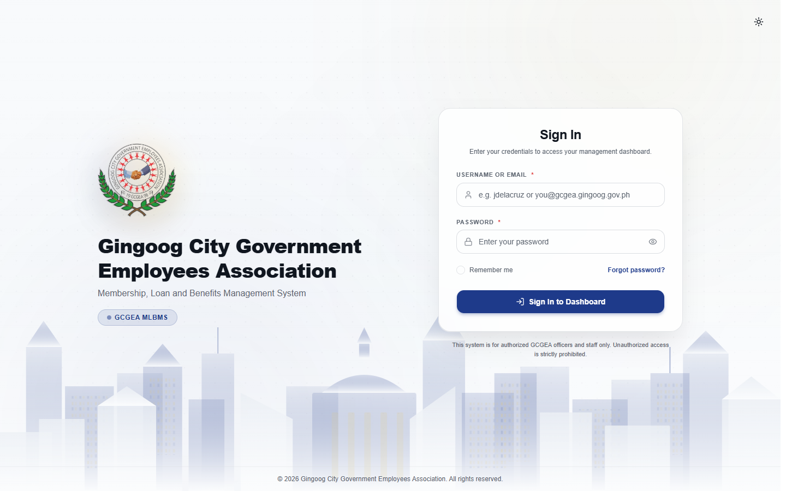
The GCGEA MLBMS sign-in screen
If your administrator has required a password change (for example, on a newly created account), you will be sent straight to the Change Password screen and must set a new password before you can use the rest of the system.
2.2 Forgot Your Password
On the Sign In page, click Forgot Password.
Enter your registered email address and submit.
You'll see a "Check Your Email" confirmation. Follow the link in the email to set a new password.
2.3 Changing Your Password Voluntarily
Go to Change Password (accessible from your account menu). Enter your Current Password, then your New Password (minimum 8 characters) and Confirm Password. You remain signed in on this device after changing it.
2.4 What You'll See After Signing In
You are taken to your landing page — for most staff this is the Dashboard; some roles with narrower permissions may land on a more specific screen. The sidebar on the left only shows the menu items your account has permission to use.
3. Dashboard
The Dashboard is the system's home screen — an "executive cockpit" summarizing the whole association's activity. What you see here depends on your permissions; each section below only appears if you have the matching module permission.
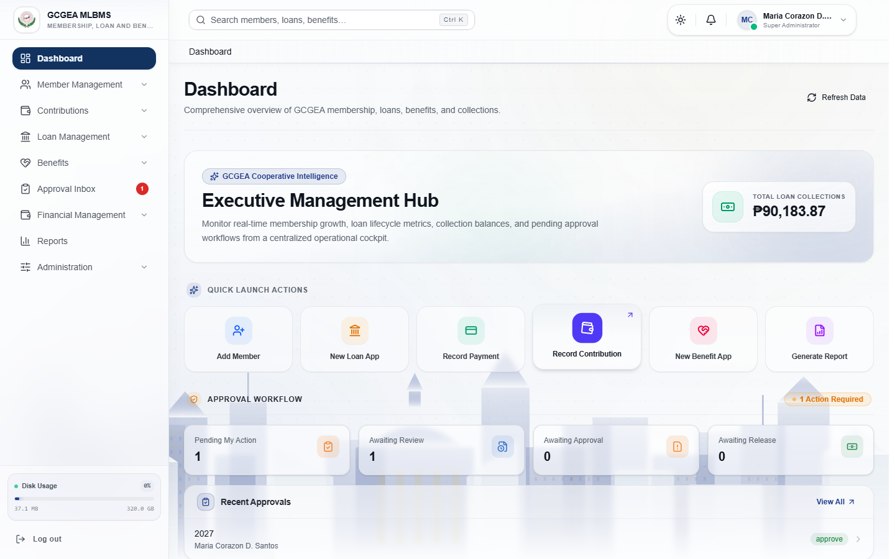
The Dashboard home screen with quick actions and key metrics
3.1 Quick Launch Actions
Shortcut buttons at the top of the Dashboard let you jump straight into common tasks (e.g., Add Member, Record Contribution, Create Loan) without navigating the menu.
3.2 Approval Workflow Summary
If you are an approver for any module, you'll see:
Pending My Action, Awaiting Review, Awaiting Approval, Awaiting Release counters.
A Recent Approvals list of items you've recently acted on, each linking to its detail page.
Financials & Balances — Active Loans, Outstanding Loan Balance, Total Collections, Benefits Released, Monthly Contributions, and Fund Balances.
Reloans & Pipeline — Pending, Awaiting Review, Approved, and Awaiting Release counts specifically for reloan (renewal) applications, plus members newly eligible to reloan this month.
Membership & Scope — Benefit Distribution by Type, Members per Office, Membership Growth by Year.
3.5 Activity & Monitoring Hub
Filterable activity feed (All / Loans & Payments / Alerts & Overdue / Members & Benefits) showing: Recent Loan Applications, Recent Payments, Upcoming Loan Due Dates, Overdue Accounts, Recent Benefit Applications, Recently Added Members, and Incomplete Member Profiles. Each card links to its full list ("View All").
4. Member Management
4.1 All Members
Menu: Member Management → All Members
The main member directory — every registered member, searchable and filterable.
Search by name, member number, office, position, or phone number.
Filters: Office, Sex, Membership Status (Active/Inactive/Suspended/Terminated/Deceased), Retiree Status.
Table shows photo, name, position, sex, birthdate, auto-calculated age, office, contact info, date joined, tenure, membership status (with a toggle switch to set Active/Inactive), retiree status, and a Profile Completeness progress bar.
Row actions: View, Edit, Archive (requires a typed reason).
Toolbar: Print List, Export, Import, and Add Member.
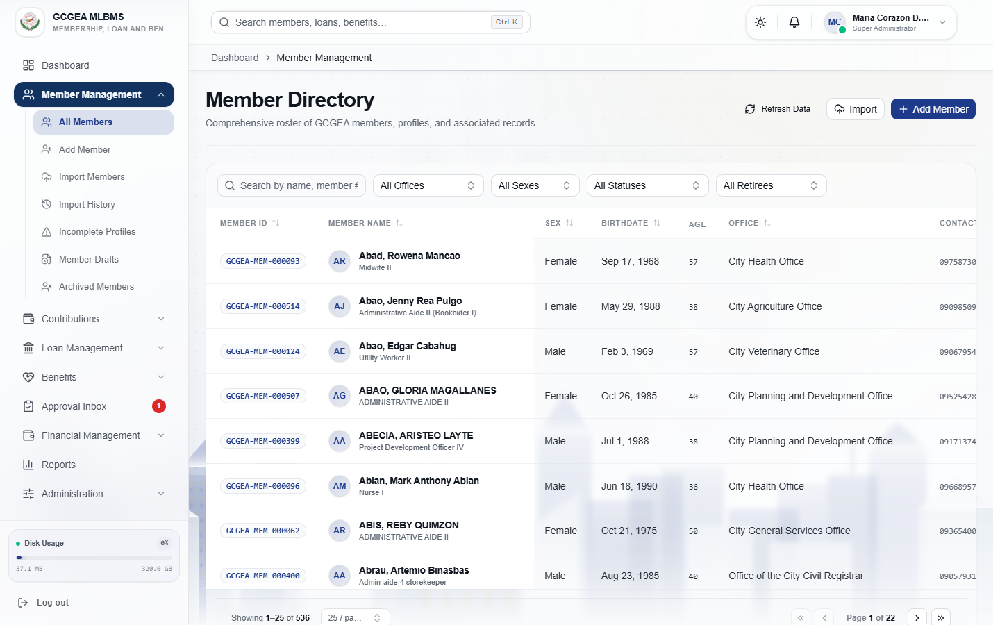
The Member Directory list, searchable and filterable
4.2 Adding / Registering a Member
Menu: Member Management → Add Member
The registration form is organized into five sections, all on one page:
Personal Information — Employee #, full name, sex, birthdate (age is calculated automatically), civil status, spouse name (if applicable), contact number, email, address, and a profile photo upload.
Employment Information — office, position, date of regular appointment (length of service is auto-calculated), employment status.
Membership Information — membership type, date became a GCGEA member (length of membership auto-calculated), membership status, retiree status, and optional monthly net pay.
Beneficiaries — add one or more beneficiaries (name, relationship, birthdate, contact, share %).
Supporting Documents — upload required documents: Valid ID, Appointment Document, Membership Form. If you entered a monthly net pay, a Payslip / Net Take-Home Pay document also becomes required.
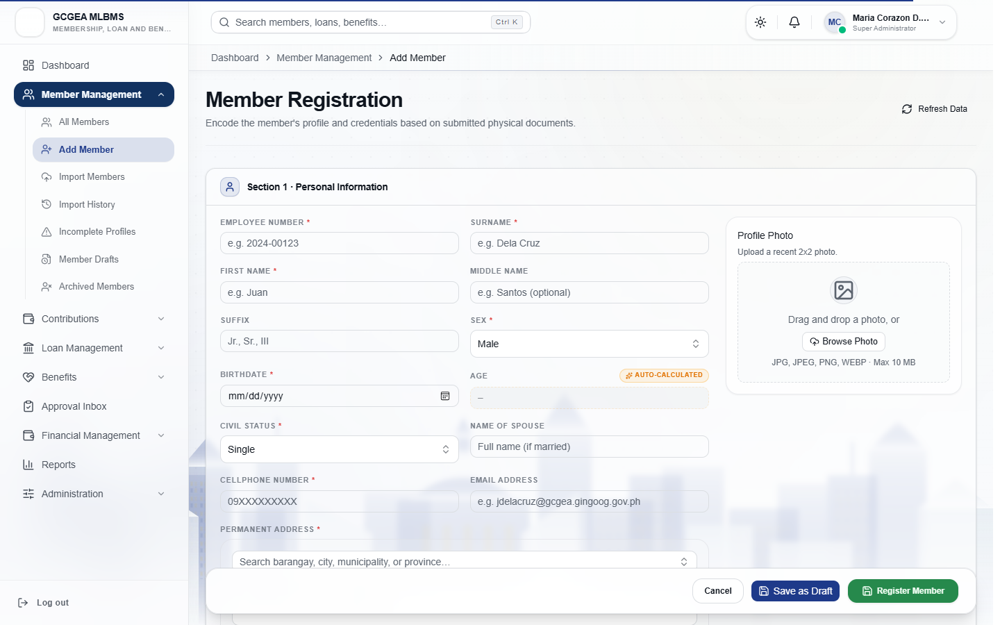
The Member Registration form
Saving your work:
Save as Draft — keeps your progress and can be resumed later; the system also auto-saves every ~30 seconds while you're editing a draft. A completion-percentage bar shows how much is filled in.
Submit Registration / Register Member — finalizes the record. Missing required fields or documents will be flagged before you can submit.
Note: After registering a member, if the required membership fee has not yet been posted, the system reminds staff to post it under Financial Management → Payments before the member can be fully approved/activated.
4.3 Member Profile
Menu: click any member's name from the directory
Shows the member's complete record:
Header with photo, name, member #, position, office, status badges, and completeness meter.
Summary tiles: Outstanding Loan Balance, Total Contributions, Total Benefits Received.
Quick-action buttons: Record Contribution, Create Loan, Record Payment, Create Benefit Request — each opens the relevant form pre-filled with this member.
Tabs: Overview, Employment, Beneficiaries, Contributions (with a Void option), Contribution Allocation, deduction-type tabs (e.g., Cash Pabaon), Loans (with a Reloan button when eligible), Loan Payments, Benefits, Documents, and Activity History.
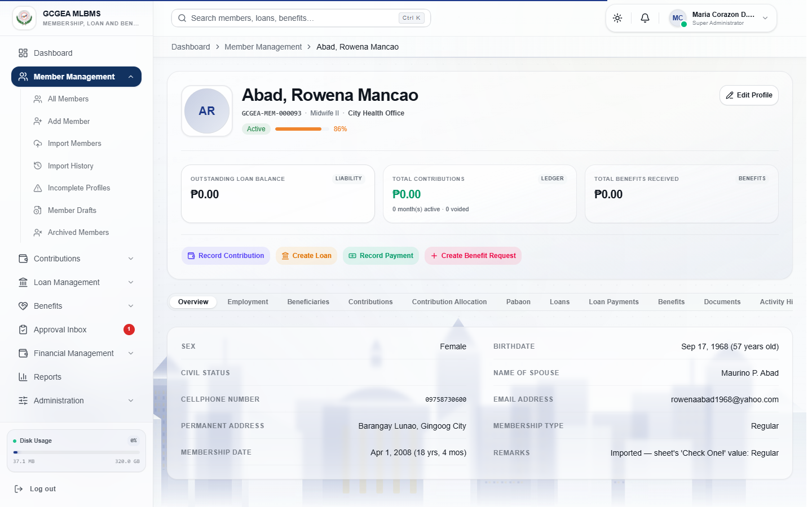
A member's profile page with summary tiles and quick actions
4.4 Importing Members in Bulk
Menu: Member Management → Import Members
An 11-step guided wizard for loading many members at once from an existing spreadsheet (Excel/CSV), instead of registering them one by one:
Upload Workbook (.xlsx, .xls, .csv)
Select Worksheet
Detect Header Row — the system finds your column headers automatically
Map Columns — match your spreadsheet's columns to system fields
Preview Records & Validation — every row is tagged New / Exact Duplicate / Probable Match / Possible Match / Invalid; invalid rows must be fixed before continuing
Validate & Clean — summary of fixes and warnings
Resolve Offices — match office names in your file to the offices already set up in the system
Review Beneficiaries — check the beneficiary names detected per member
Review Legacy Loan Data — any old loan balances found in the file are staged for review, not created as live loans yet
Confirm Import — final counts; you must check an acknowledgment box before importing
Import Summary — results, with a downloadable audit report (CSV)
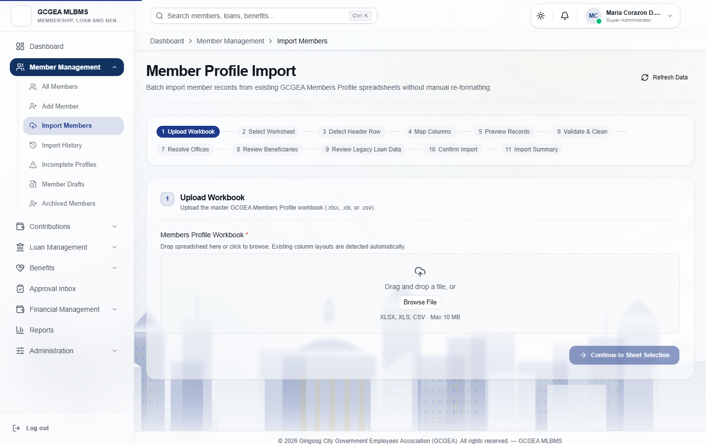
The Member Import Wizard
Use Import History to see past import batches, download their audit reports, or Undo Import — but only the single most recently completed batch can be undone, and doing so permanently deletes the members it created.
4.5 Incomplete Profiles, Drafts, and Archived Members
Incomplete Profiles — members whose profile completeness is below 100%; a worklist for following up on missing information.
Member Drafts — registrations started but not yet submitted; continue editing from here.
Archived Members — members who have been archived (with a reason), kept for record-keeping.
5. Contributions
Contributions cover Monthly Dues and related deductions like Cash Pabaon.
5.1 Contribution Records
Menu: Contributions → Contribution Records
The ledger of all contribution transactions.
KPI tiles: Total Contributions, Total Amount Collected, Paid Members, Unpaid Members, Contributions This Month.
Filters: search, Period, Type, Office, Payment Method, Status, and a date range.
Row actions: View Details, View History, Edit Record (Posted only), Void Transaction (requires a reason).
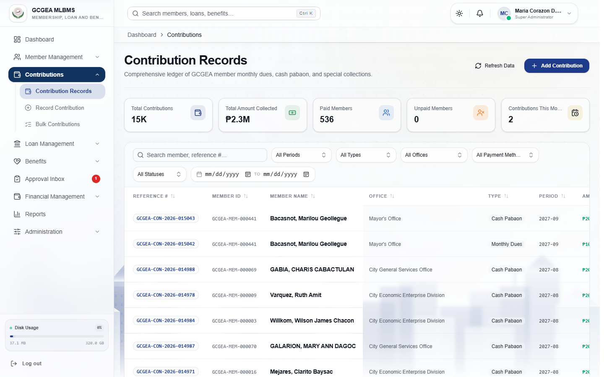
The Contribution Records ledger
5.2 Recording a Contribution
Menu: Contributions → Record Contribution
Select the member. The system shows their contribution total, outstanding loan balance, and loan counts, plus their last recorded contribution.
Enter payment details: contribution period, the Monthly Dues amount (fixed by system settings), Cash Pabaon amount (auto-linked, if applicable), payment method, payment date, official receipt number, payroll reference, and remarks. You can add several period entries at once when creating new records.
The system blocks duplicate entries for the same member/period, and flags unresolved voided periods with a shortcut to fix them. On save, you'll get a generated reference number (e.g. GCGEA-CON-2026-000001).
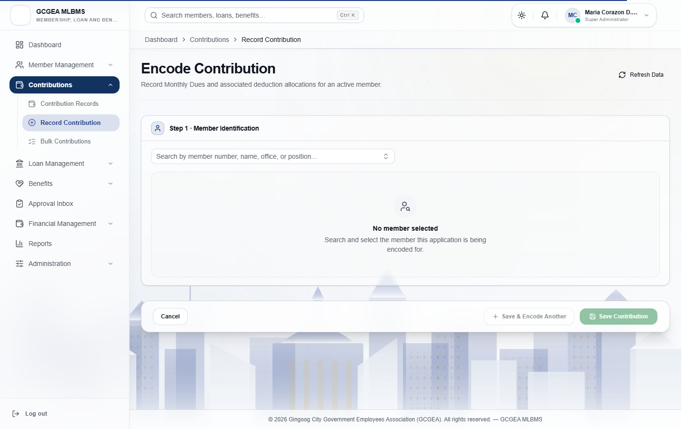
The Record Contribution form
5.3 Bulk Contributions
Menu: Contributions → Bulk Contributions
For posting Monthly Dues across many members at once (e.g., a payroll run):
Set up the batch: contribution period, office(s), membership status filter, payment date/method, and payroll reference.
Click Load Unpaid Members — the system pulls all matching members and automatically excludes anyone already paid for that period.
Review/edit the roster grid — amounts, paid/unpaid status, and remarks per member. Use the toolbar to Apply Rate, Mark Paid/Unpaid, Reset Rates, or Exclude selected rows.
Click Save & Post [N] Contribution Entries, confirm in the dialog, and the batch is posted. A results banner shows dues saved, deductions created, duplicates skipped, and any failures.
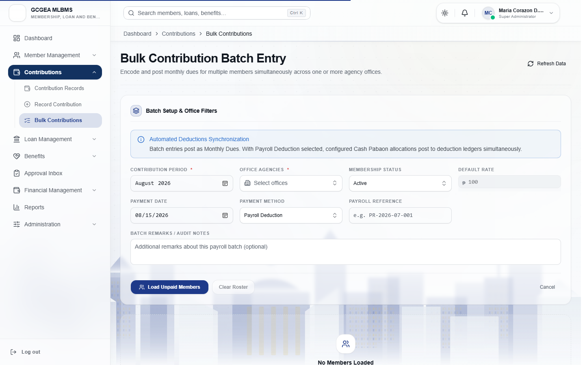
The Bulk Contributions batch entry screen
5.4 Contribution Detail & Void
Opening a record shows tabs for Overview (with Fund Allocations), Member Profile (their other contributions), Payment Data, Audit Timestamps, and Activity History. Voiding a record requires a reason and, for Monthly Dues, also voids the linked Cash Pabaon deduction for that period; you can then re-contribute for that month via a shortcut.
5.5 Contribution Reports
Menu: Contributions → Contribution Reports(or via the Reports Center)
Set your filters (date range, period, office, member, status, payment method) and click Generate to produce:
KPI tiles: Total Records, Total Collected, Paid/Unpaid Members, Average Paid, Peak Single Receipt.
Charts: Monthly Collections Trend, Collections per Office, Payment Method Breakdown.
A detailed, exportable results table (Print, CSV, Excel, PDF).
6. Loan Management
6.1 Loan Applications
Menu: Loan Management → Loan Applications
The master list of all loan applications, in any status.
KPI ribbon: Total Applications, Active Loan Accounts, Outstanding Portfolio, Overdue Accounts.
Filters: search, Status, Type (New/Reloan), Reset Filters.
Draft rows can be Continued (edited) or deleted; fully-paid/active/released loans show a Reloan button.
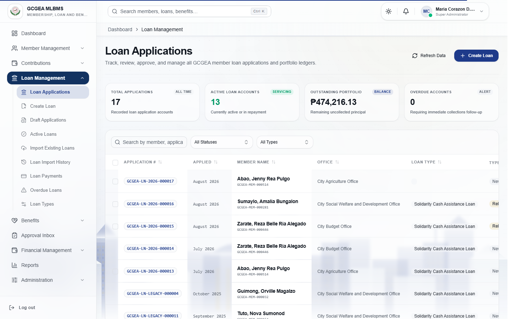
The Loan Applications list
6.2 Creating a Loan Application
Menu: Loan Management → Create Loan
A 6-step wizard:
Select Member — the member must meet minimum membership length and have fully paid dues, or the system blocks you with an explanation.
Loan Details — application date, assigned loan officer, and (after saving the member's financial profile — net pay and Net Take-Home Pay document) the loan product, requested amount, repayment term, payment method, and purpose. A Product Matrix panel shows that loan type's amount range, interest rate, method, maximum term, processing fee, and required contribution months.
Eligibility Check — the system runs an automatic checklist and shows Eligible / Not Eligible / Eligible with Warning. If a user has override permission, a Not Eligible result can be overridden with a written justification and a board resolution reference — this is logged in the audit trail.
Loan Computation — principal, net proceeds, total interest, monthly amortization, processing fee, total payable, first due date, maturity date, and the full amortization schedule.
Requirements — upload the 5 required documents: Loan Application Form, Latest Net Take-Home Pay, Valid Government ID, Salary Deduction Authorization, and Promissory Note.
Review & Submit — a read-only summary; check the confirmation box and click Submit Loan Application.
You can Save as Draft at any step (auto-saves every 30 seconds).
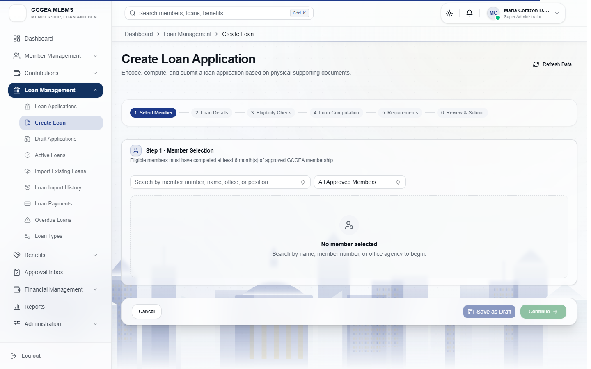
The Create Loan Application wizard
6.3 Loan Detail Page
Opening any loan shows its full account: application details, computation breakdown, full amortization schedule, payment history, requirements/eligibility, and approval history — plus buttons to Record Payment, Reloan (when eligible), Print Application, Print Check (once released by check), and view its Loan Statement.
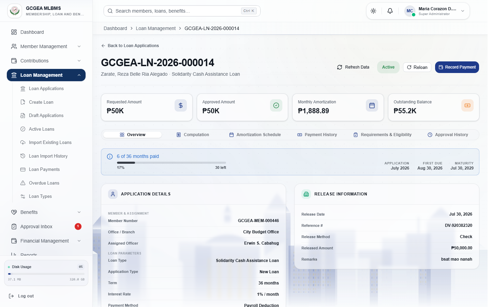
A Loan Detail page for an active, released loan
6.4 Active Loans / Overdue Loans / Loan Drafts
Pre-filtered views of the same loan list:
Draft Applications — unfinished applications you can resume.
Active Loans — loans currently being repaid (Released/Active/Overdue/Restructured).
Overdue Loans — a collections follow-up worklist of accounts past due.
6.5 Loan Types
Menu: Loan Management → Loan Types
Admin-level screen to configure the loan products offered (name, interest rate, amount range, max term, processing fee, minimum membership/contribution months, etc.). Add Loan Type opens a form dialog; each existing type can be edited or deleted.
6.6 Importing Existing (Legacy) Loans
Menu: Loan Management → Import Existing Loans
Used to bring members' pre-existing loan balances from a legacy system into GCGEA MLBMS:
Choose the Month of Balance and upload your workbook (.xlsx/.xls/.csv).
Click Generate Loan Preview — the system matches each row to a system member automatically where possible; ambiguous matches show a searchable dropdown of candidates with a match score. Rows already imported for that balance month are automatically skipped.
Review the preview table (principal, interest, prior/recent payments, balances, status) and resolve any unmatched rows.
Click Commit [N] Loan(s) to create the loan and payment history records.
Use Loan Import History to review past batches, download audit reports, or Undo Import on the most recent batch (destructive — deletes the loans and payment history it created).
6.7 Reloan (Renewal) Wizard
Available from a member's eligible existing loan via the Reloan button. A 7-step wizard: Previous Loan Summary → Member & Eligibility → Current Financial Info → New Loan Details → Computation (which nets out the previous loan's remaining balance) → Requirements → Review & Submit. Works the same way as a new loan application, but is linked to the original loan and does not alter it.
6.8 Loan Statement
From a loan's detail page → Loan Statement
A printable "Statement of Loan" formatted like GCGEA's paper template: member/loan details, an installment-by-installment breakdown (with a date-range and payment-status filter for what's displayed), a balance summary, and signature lines for verification. Click Print Statement to print.
6.9 Loan Payments
Menu: Loan Management → Loan Payments
Loan Payments list — search all posted loan payments by member, payment reference, or application number.
Record Payment — pick the member, then the specific loan account (only loans with a balance show up). If an installment was only partially paid, the shortfall is flagged and can be included in the suggested amount. Enter payment date, amount paid, penalty (auto-computed if the loan is overdue), payment method, and OR number (auto-generated or manual). The system will not let you overpay past the outstanding balance.
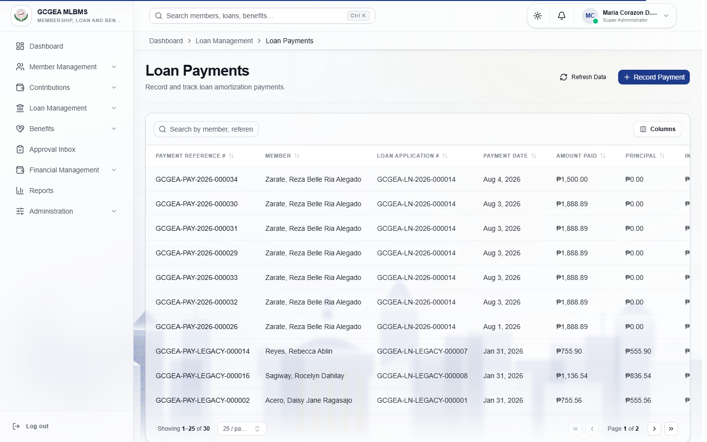
The Loan Payments ledger
6.10 Printing a Loan Check
Once a loan is released by check, use Print Check from the loan detail page. The check layout is sized for standard 8.5×3.5 in check stock — print at 100% (actual size) and adjust your printer's margins for alignment with your pre-printed check forms.
7. Benefits
Benefits cover programs such as Retirement, Mortuary Cash Assistance, and similar member claims.
7.1 Benefit Applications
Menu: Benefits → Benefit Applications
Master list of every benefit application. Search by member/application number, filter by status. Create Application starts a new one; draft rows can be continued or deleted (including in bulk).
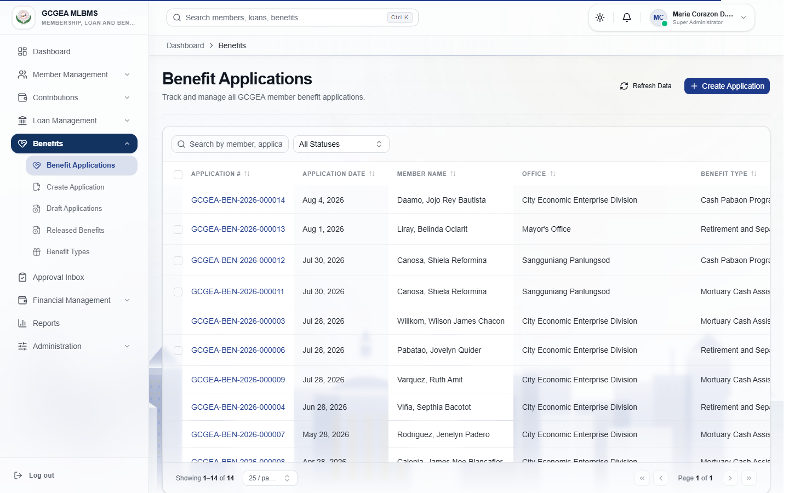
The Benefit Applications list
7.2 Creating a Benefit Application
Menu: Benefits → Create Application
A 4-step wizard:
Select Member — shows their contributions, loan balance, and recent benefit history.
Benefit Details & Purpose — application date, benefit type (only types the member currently qualifies for are shown — e.g. Retirement only appears if their Retiree Status is "Retired"), requested amount (auto-computed for formula-based benefits), incident date, recipient, assigned Benefits Officer, purpose, and required document uploads for that benefit type.
Eligibility & Requirements — an automatic eligibility checklist with an overall Eligible/Not Eligible result. If not eligible, an authorized user can apply an override with a written justification (logged in the audit trail).
Review & Submit — confirm all physical documents have been verified, then submit.
Save Draft works at any step. On submission you'll receive the generated application number.
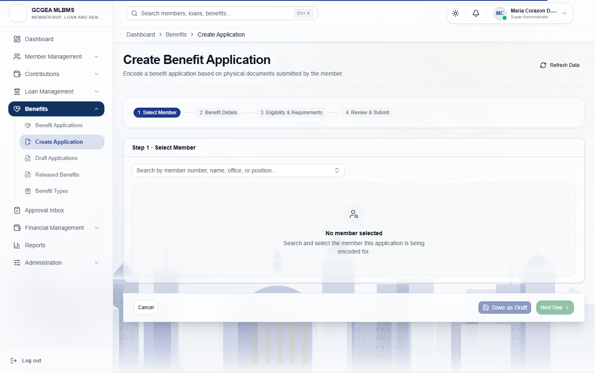
The Create Benefit Application wizard
7.3 Benefit Detail & Release
Each application's detail page shows: requested/approved/released amounts, release date/reference, four tabs (Application Summary, Payment Status, Requirements, Approval History), and — once released — a Print Check button. If only partially released, the system will not let you release the remaining balance directly; contact an administrator.
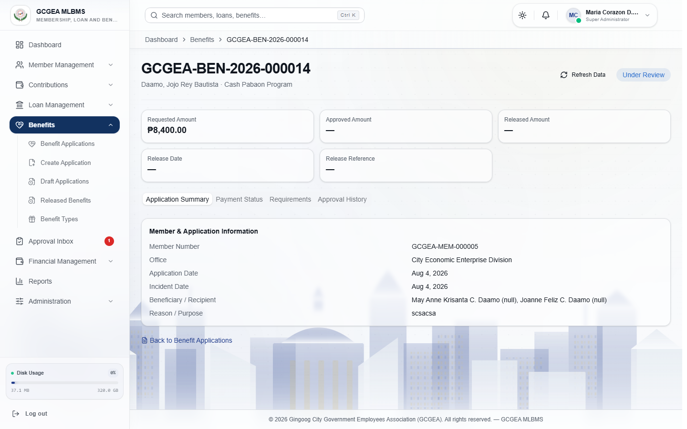
A Benefit Application detail page
7.4 Draft Applications / Released Benefits
Pre-filtered views of the Benefit Applications list showing only Drafts (to continue/delete) or only Released benefits (a worklist for check printing/verification).
7.5 Benefit Types
Menu: Benefits → Benefit Types
Admin screen listing each benefit program with its default/maximum amount, frequency limit, minimum membership requirement, required documents, and whether approval is required. Add Benefit Type opens a configuration form. Note: certain "Core Benefit" types (Retirement/Separation and the two Mortuary benefits) share one policy — editing one syncs the proration schedule across all three.
7.6 Printing a Benefit Check
From a Released application's detail page → Print Check. Same 8.5×3.5 in check-stock layout and printing instructions as loan checks (see §6.10).
8. Financial Management
8.1 Payments (Over-the-Counter)
Menu: Financial Management → Payments
The Treasurer's hub for recording walk-in payments and issuing a receipt on the spot. Choose a payment type card (only types you have permission for appear):
Contribution Payment — select member, then period, amount, method, date, and OR number. Warns on duplicate period entries.
Loan Payment — select member, then their loan account; amount/penalty auto-suggested; blocks overpayment.
Benefit Payment — select member, then their approved application; for Cash Pabaon-type benefits, shows a settlement ledger (approved amount minus prior contributions = net payable).
Membership Fee — posts the one-time membership fee for a member who hasn't paid it yet.
Each posts immediately to the member's ledger and the association's cash balances — double-check the amount and OR number before saving.
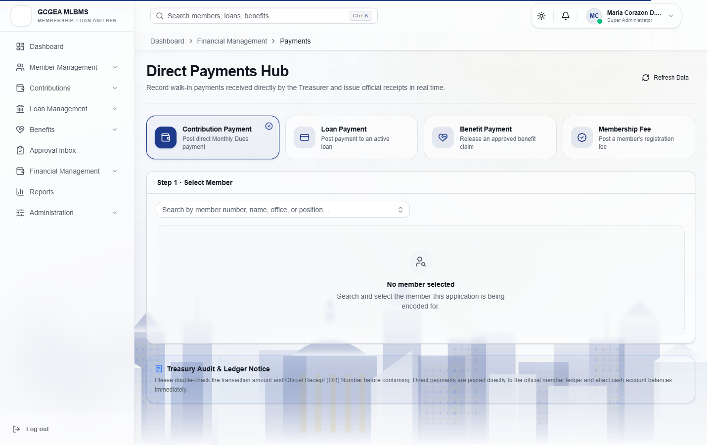
The Payments (Over-the-Counter) hub
8.2 Annual Budgets
Menu: Financial Management → Annual Budgets
One record per fiscal year, moving through Draft → For Approval → Approved (or Rejected). List shows Fiscal Year, Estimated Revenue, Proposed Budget, Unallocated Balance, and Status. The Treasurer prepares and submits a budget; the Approving Officer/President approves it; an Auditor has read-only access. Click Create Annual Budget, or Open/View an existing one depending on your permissions and its status.
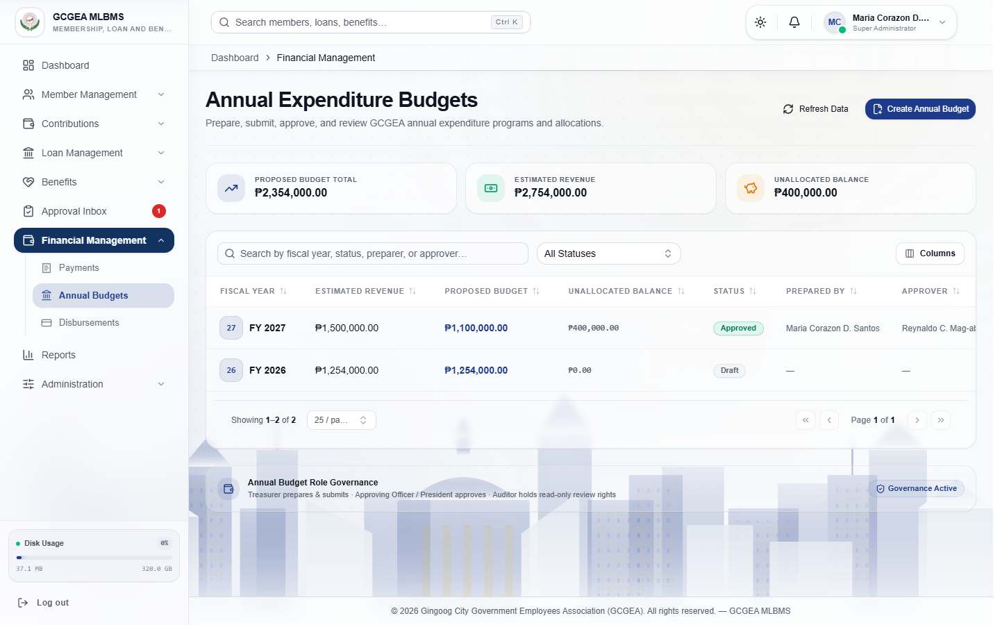
The Annual Budgets list
8.3 Disbursements
Menu: Financial Management → Disbursements
Expenses charged against an approved annual budget's line items.
New Disbursement — choose the approved budget and its particular/account line (the system shows that line's remaining balance), then enter date, payee, amount, payment method, and reference.
The record moves through its lifecycle with buttons that appear based on its current status and your permissions: Save Draft → Submit for Approval → (approval happens in the Approval Inbox) → Mark as Paid → Print Check (if paid by check) → Void Disbursement (if needed, with a required reason).
A disbursement cannot be created until at least one annual budget has been approved.
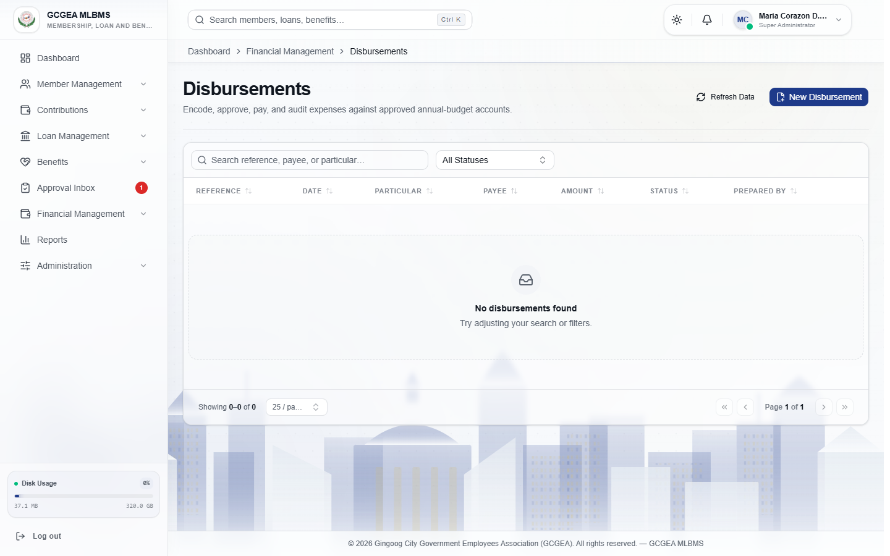
The Disbursements list
8.4 Printing Disbursement Checks
From a Paid disbursement → Print Check, same check-stock format and instructions as loan/benefit checks.
9. Approval Inbox (My Approvals)
Menu: Approval Inbox(only visible if you are an approver for at least one module)
Your personal worklist for anything routed to you for review, approval, release, rejection, or return — covering member registrations, loan applications, benefit applications, annual budgets, and disbursements.
Tabs: Pending, For Approval, Approved, Rejected, Returned, Released.
Search by reference/title/member/stage, and filter by date range.
Click any item to open its Approval Detail page, where the full record (loan computation, benefit eligibility, budget line items, etc.) is shown alongside the applicant's profile and document uploads.
Actions available depend on the item's current stage and your permission: Mark Reviewed, Approve, Release, Return for Revision (requires a reason), Reject (requires a reason).
Once a loan is Approved or later, you can Print / Save as PDF an official approval sheet with signature lines.
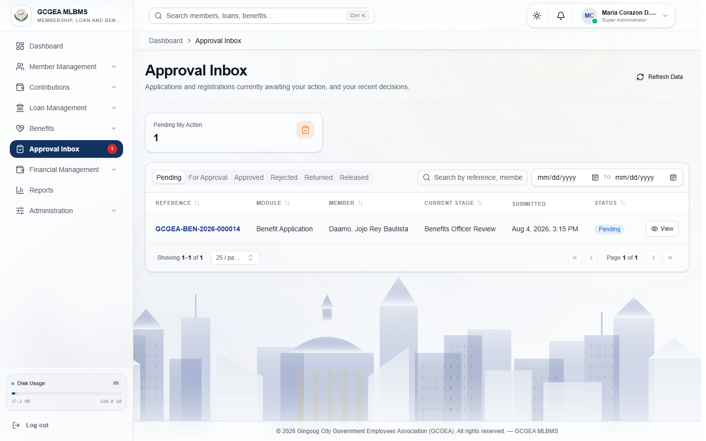
The Approval Inbox
How approval chains are configured (who reviews/approves/releases each module) is set up under Administration → Approval Workflow — see §11.4.
10. Reports
Menu: Reports
The Report Center groups all available reports by category (only categories you have permission for are shown):
Category
Example Reports
Member Reports
Master List of Members, Active Members, Retired Members, Members by Office/Sex, New Members, Incomplete Profiles
Contribution Reports
Monthly Contributions, Contributions by Office, Unpaid Contributions, Member Contribution History, Payroll Deduction Summary, Fund Allocation Report
Benefit Applications, Approved/Released Benefits, Benefits by Type/Office, Member Benefit History
Financial Reports
Transaction Report, Financial Statement, Daily/Monthly Collection Report, Remittance Breakdown, Annual Budget, Monthly Disbursements, Cash Flow Summary, and more
Click a report name to open its preview, then generate, print, or export it (CSV, Excel, PDF depending on the report).
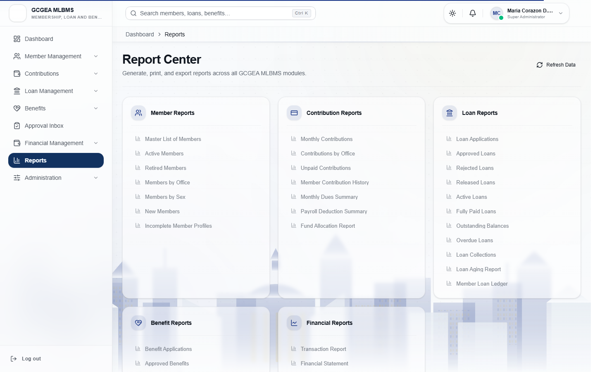
The Report Center
11. Administration
Visible only to Administrators and roles with the matching permission.
11.1 Offices
Menu: Administration → Offices
Manage the branch/office list members and staff belong to — Office Code, Name, Description, member count (click to jump to that office's members), and an Active/Inactive toggle. Add Office or the row Edit icon opens the same form dialog.
Add/Edit User — account details (name, username, email, password), Primary Role and Additional Roles, account status, "Require Password Change on First Login," and remarks. From here you can also grant Additional Allowed Permissions or Explicitly Denied Permissions on top of the assigned role(s) — a deny always overrides an allow.
User Permissions — a detailed view of a user's effective access: which permissions come from their role vs. a direct override, with a Sidebar Access Preview showing exactly what menu they'll see. You can also Copy Permissions from Another User or Reset to Role Defaults.
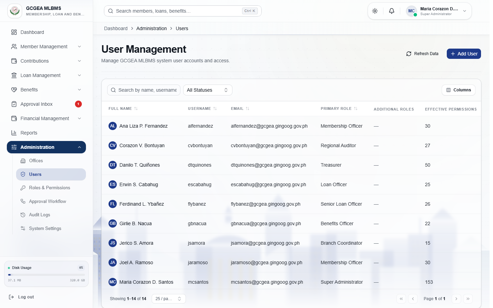
The User Management list
11.3 Roles & Permissions
Menu: Administration → Roles & Permissions
Roles list — every role (built-in "System Roles" and custom ones), with assigned-user counts and permission counts. Actions: View, Edit, Manage Permissions, Duplicate, Activate/Deactivate, Delete (custom roles only).
Add/Edit Role — name, code, description, status, and a full permission matrix; you can start from a preset or copy another role's permissions.
Manage Permissions — dedicated screen with quick presets (View Only, Encoder, Approver, Full Access, Clear All) plus the granular matrix; shows how many currently-assigned users will be affected before you save.
The Super Administrator role is protected — its permissions cannot be reduced.
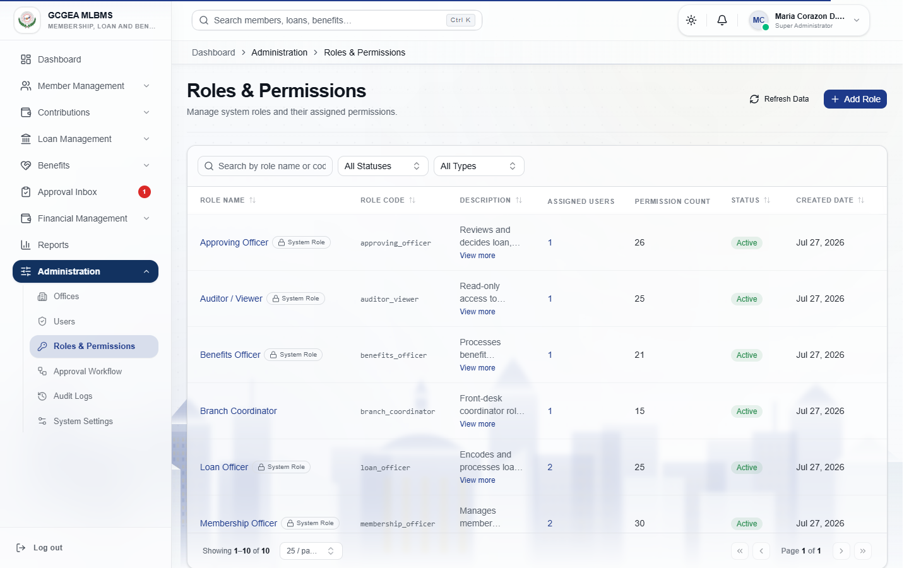
The Roles & Permissions list
11.4 Approval Workflow
Menu: Administration → Approval Workflow
This is where you define who reviews, approves, and releases each module's submissions — Member Registration, Loan Application, Benefit Application, Annual Budget, and Disbursement each have their own card:
Toggle a module's workflow on/off — if off, submissions in that module are auto-approved immediately with no review steps (a warning is shown).
Add/remove stages after the fixed "Submission" starting stage; each stage is set to Review, Approve, or Release, and assigned to a specific Role, a specific User, or tied to an Office.
Click Save Workflow Setup to apply.
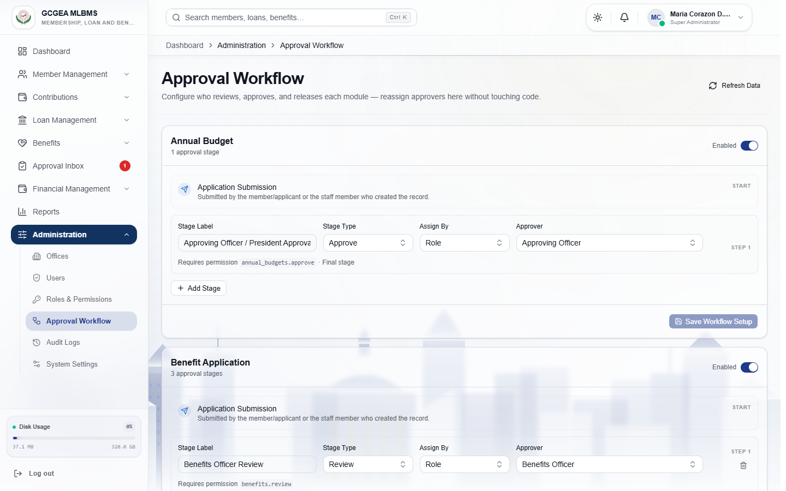
The Approval Workflow configuration screen
11.5 Audit Logs
Menu: Administration → Audit Logs
A read-only, searchable trail of system activity: date/time, user, role, module, action, record reference, IP address, device, and success/failure. Click the eye icon on any row to see a side-by-side comparison of the old and new values for that change.
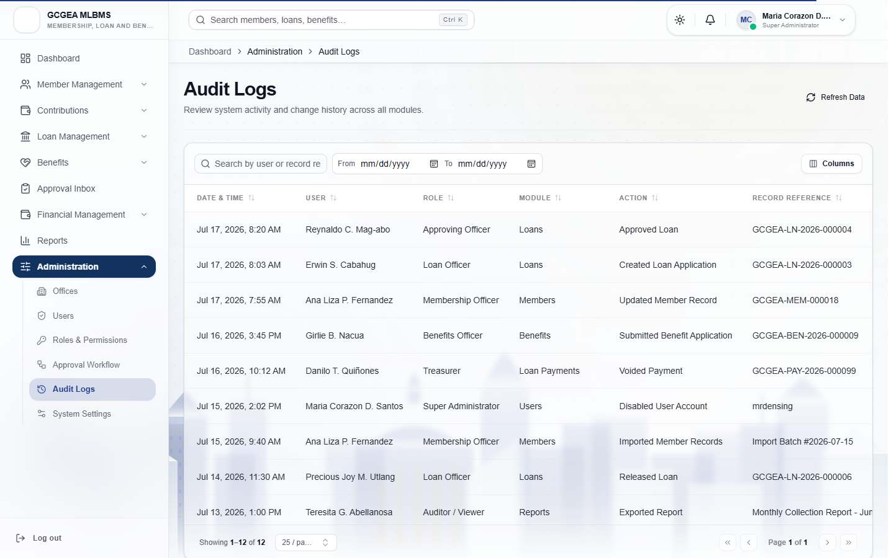
The Audit Logs viewer
11.6 System Settings
Menu: Administration → System Settings
Organized into sections down a side menu: General Settings (system name), Association Profile, Membership Settings, Employment Statuses, Numbering Formats (how reference numbers like GCGEA-CON-2026-000001 are generated), Loan Settings, Contribution Settings, Deduction Types, Benefit Settings, Notification Settings, Security Settings, Report Template (customize how printed reports look), Backup, and Appearance (logo, theme, sidebar branding). Each section has its own Save and Reset to Default controls. The Backup section lets you create, download, and restore full settings backups.
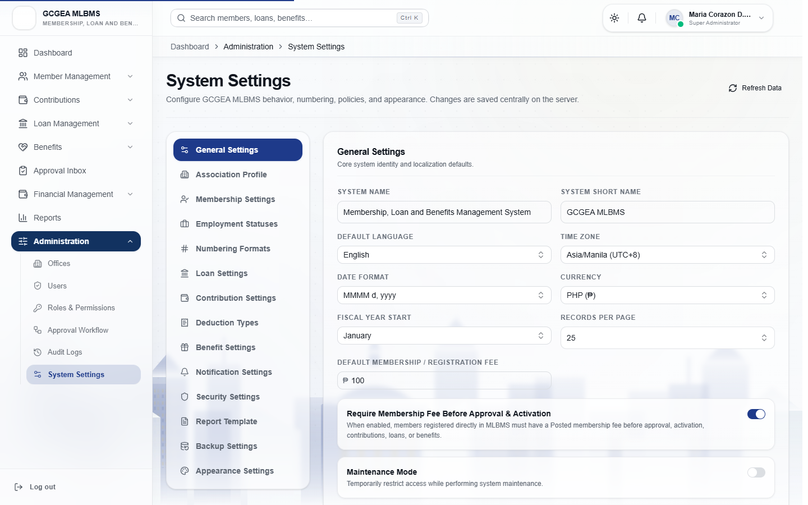
The System Settings screen
12. Notifications & My Profile
12.1 Notifications
Click the bell icon (or Menu → Notifications) to see system alerts relevant to your role. Toggle Show unread only, click a notification to open the related record (it's automatically marked read), or use Mark all as read.
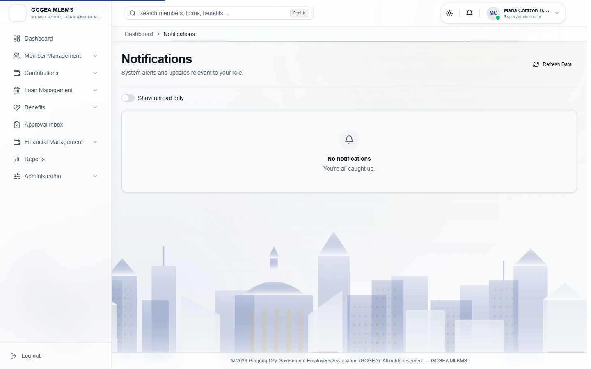
The Notifications panel
12.2 My Profile
Account menu → My Profile
View and update your own account: profile photo (upload/remove — JPG/PNG/WebP, up to 5 MB), your assigned role, and your recent login activity (device, time) for your own security awareness.
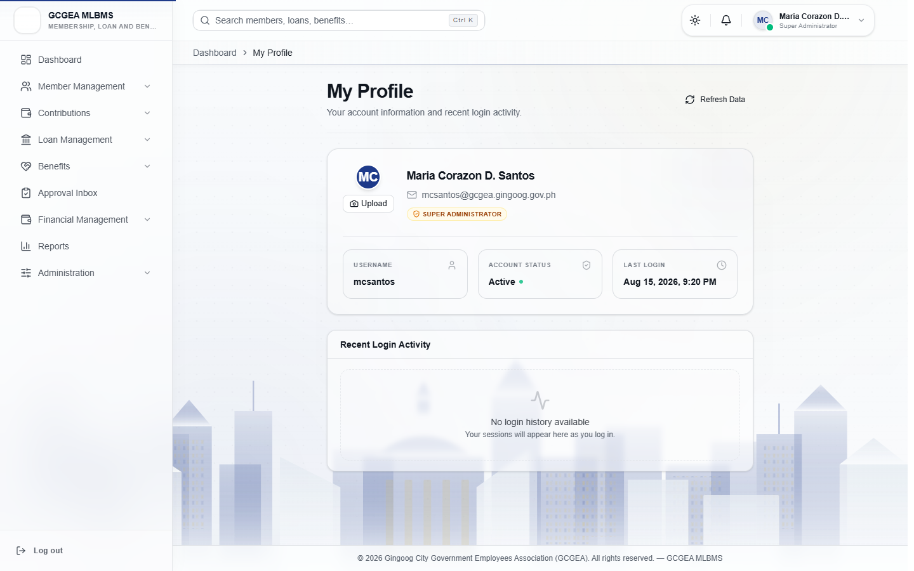
The My Profile screen
13. Glossary of Statuses
Status
Meaning
Draft
Saved but not yet submitted; can still be edited or deleted
Submitted / Under Review
Sent in and awaiting the first approval stage
For Approval
Passed review, awaiting an approving officer's decision
Approved
Approved but not yet released/paid
Released / Active
Funds have been released to the member; loan is now being repaid
Rejected
Declined, with a reason recorded
Returned
Sent back to the encoder for revision, with a reason
Fully Paid
Loan balance fully settled
Overdue
Loan has one or more missed/late installments
Restructured
Loan terms were formally revised
Posted
Contribution/payment transaction is finalized
Voided
Transaction cancelled, with a reason recorded (does not delete the record)
14. Frequently Asked Questions
Q: A menu item I need isn't showing up. What do I do?
A: Menu visibility is controlled by permissions. Contact your system administrator to review your role or user-level permissions under Administration → Users/Roles.
Q: I made a mistake on a Posted contribution/loan payment — can I just delete it?
A: No — posted financial records are not deleted. Use Void (with a reason) instead; this preserves the audit trail. You can then re-record the correct transaction.
Q: A loan/benefit application says the member is "Not Eligible." Can I still proceed?
A: Only if your account has override permission. You'll need to provide a written justification (and, for loans, a board resolution reference); this is recorded in the audit trail for accountability.
Q: How do I undo a bulk import?
A: Go to the module's Import History page. Only the most recently completed batch can be undone, via Undo Import — this permanently deletes the records that batch created, so use it carefully.
Q: Where do I go to print a check for a released loan/benefit/disbursement?
A: Open the record's detail page — a Print Check button appears once it's Released/Paid. Always print at 100% (actual size) on your pre-printed check stock and adjust printer margins as needed.
Q: Who configures the approval chain (who approves what)?
A: Administrators, under Administration → Approval Workflow (§11.4).
End of manual. For issues not covered here, contact your GCGEA system administrator.
GCGEA Membership, Loan and Benefits Management System — User Manual v1.0 — For internal association use.